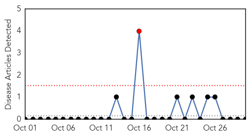
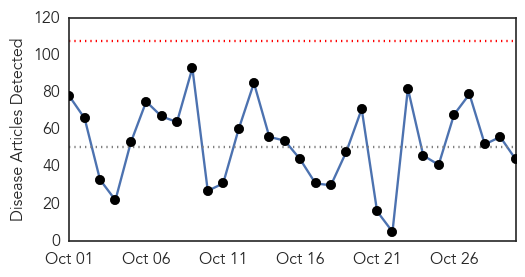
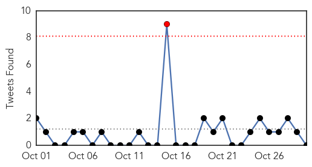

Yellow Fever
30-Day Web Trend
1 alerts, 0 warnings

30-Day Twitter Trend
0 alerts, 0 warnings

Article Locations

Article Confidences

Top Articles:
-
No articles found for Oct 30, 2015
Top Tweets:
-
No tweets found for Oct 30, 2015
Unknown
30-Day Web Trend
0 alerts, 0 warnings

30-Day Twitter Trend
0 alerts, 0 warnings

Article Locations
Article Confidences

Top Articles:
- 0.992
- donga.com[English donga]
- 0.976
- Recent child fever, paralysis cases prompt nationwide probe for similar suffering
- 0.969
- Health officials on alert over ‘alarming increase’ in Indiana syphilis cases
- 0.958
- Officials swing into action after hospital MERS cases
- 0.951
- 2014 enterovirus D68 outbreak more widespread than first thought: study
- 0.946
- Protecting people from Lyme disease
- 0.924
- Deaths Linked To Bacterial Infection At Pa. Hospital
- 0.917
- Chicago Tribune
- 0.901
- Last year's enterovirus D68 outbreak more widespread than first thought
- 0.892
- Prepare Yourself for Cold, Flu Season
- 0.884
- J Donald Millar
- 0.884
- South Korea on alert as 31 hit by mystery illness
- 0.881
- Indiana health officials report surge in syphilis cases
- 0.881
- JAMAICA – Outbreak confirmed
- 0.880
- Bacterial infection at York Hospital infects open-heart patients
- 0.871
- Mexican Cyclospora outbreak sickened UK and Canadian travellers
- 0.865
- Malaysia General Business Sports and Lifestyle News
- 0.854
- Heart Surgery Patients Die of Bacterial Infection in Pennsylvania
- 0.848
- Free flu shots offered to Elk City students
- 0.843
- Indiana health officials report surge in syphilis cases, urge aggressive testing
- 0.811
- Indiana health officials report surge in syphilis cases
- 0.808
- Legionnaires' disease bacteria swells over 11 years, sending patients tointensive care, study finds
- 0.803
- Legionnaires' disease bacteria swells over 11 years, sending patients tointensive care, study finds
- 0.779
- National Institutes of Health (NIH)
- 0.779
- Rep. Angelo Puppolo Jr. offers constituents free flu shot vouchers
- 0.736
- Free Flu Shots Available at County Libraries : Eastern Group Publications
- 0.698
- State sees rise in syphilis cases
- 0.697
- Manitoba PED Infected Farms Cleared of Virus
- 0.686
- No New Infection At Hospitals – Chief Medical Officer
- 0.673
- Sherwin-Williams Develops Bacteria-Killing Paint To Help Fight Hospital Infections
- 0.673
- Sherwin-Williams develops bacteria-killing paint to help fight hospital infections
- 0.666
- Family believes flu shot left their daughter paralyzed, vision impaired
- 0.653
- South Korea on alert as 31 hit by mystery illness, news, Health News, AsiaOne YourHealth
- 0.626
- Tummy trouble and breathing problems are What's Going Around
- 0.621
- Victorians in urgent need of treatment waiting weeks to be put onto elective surgery waiting list
- 0.602
- Nearly 200 people in San Francisco have been sickened by Shigella Bacteria Outbreak
- 0.595
- South Sudan: UN launches mass nutrition screening as hunger threatens lives of thousands of children
- 0.593
- Source of illness outbreak at restaurant may never be found
- 0.578
- New ASF outbreaks raise concerns over future of Ukraine pig industry
- 0.549
- TB ‘joins HIV as most deadly infection’
- 0.536
- Guantanamo: libération du dernier résident britannique, en route pour le Royaume-Uni
- 0.532
- Family says girl became paralyzed, lost vision after receiving flu vaccine
- 0.524
- South Sudan: Unity state’s main hospital out of medical supplies
- 0.507
- Fight for healthier lives
Top Tweets:
- 0.867
- RT: Si un poeta se enamora de ti, nunca morirás. En cada sílaba, en cada palabra, en cada vacilación de la inspiración vivirá l…
- 0.587
- Saudis report another MERS death today. 543 Saudi Arabians have died from MERS infections to date. https://t.co/shKh4x9f3v
- 0.544
- RT: Increíbles descargas eléctricas de un volcán en la Patagonia. https://t.co/6LP6iZDztv
- 0.528
- This year don’t get tricked by the flu. Learn 3 ways to stay healthy this flu season: https://t.co/JGuUUlZsar Happy Halloween!
- 0.518
- Herpes is categorized into two types: herpes simplex virus 1 (HSV-1) and herpes simplex virus 2 (HSV-2) AskWHO https://t.co/lnhULQtHe1